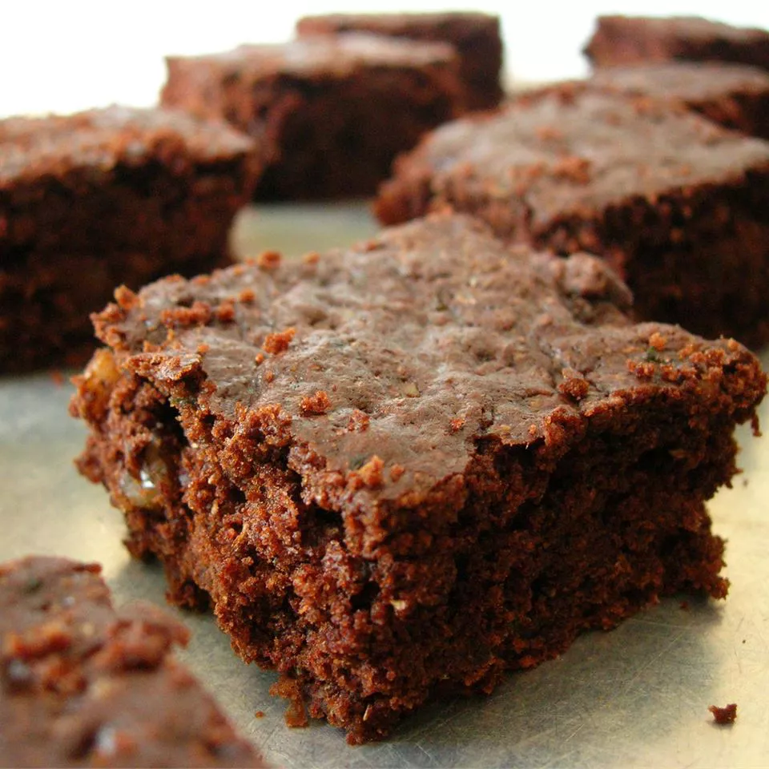

Zucchini Brownies
Ingredients
- 1 ½ cups white sugar
- ½ cup vegetable oil
- 2 teaspoons vanilla extract
- 2 cups all-purpose flour
- ½ cup unsweetened cocoa powder
- 1 ½ teaspoons baking soda
- 1 teaspoon salt
- 2 cups shredded zucchini
- ½ cup chopped walnuts
Directions
- Step1: Preheat the oven to 350 degrees F (175 degrees C). Grease and flour a 9x13-inch baking
pan.
- Step2: Mix sugar, oil, and 2 teaspoons vanilla in a large bowl until well blended. Combine
flour, 1/2 cup cocoa, baking soda, and salt together in a separate bowl; stir into sugar mixture.
Fold in zucchini and walnuts; spread batter evenly into the prepared pan.
- Step3: Bake in the preheated oven until top is dry and edges have started to pull away from
the sides of the pan, about 25 to 30 minutes. Let cool, about 20 minutes.
- Step4: Meanwhile, make frosting by whisking 6 tablespoons of cocoa and margarine in a pan
over medium-low heat until smooth and glossy; set aside to cool.
- Step5: Blend confectioners' sugar, milk, and 1/2 teaspoon vanilla together; stir into cooled
cocoa mixture. Spread over cooled brownies before cutting into squares.